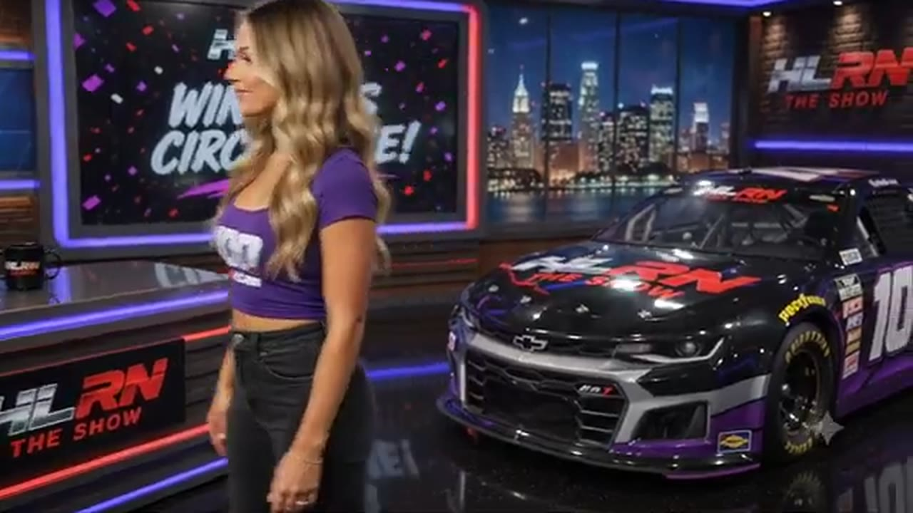

David Boyer Memorial 175 at EchoPark
Vincent Guerrero took the stage, Craig Rowe took the last-lap lead, and the David Boyer Memorial ended after 18 reported cautions.

- Date
- July 20, 2026
- Track
- EchoPark Speedway
- Race tape
- 3h 38m
- Exact chapters
- 18
Craig Rowe reaches the record
The David Boyer Memorial readout records Craig Rowe, Bryce Hinton, and Randy Showers on the podium, with Ross Campoli and Vincent Guerrero completing the top five.
TAPE-SUPPORTED. Only explicitly supported positions are published; a nearby running order is never promoted into a finish.18 ways back into the race
Every link opens the complete broadcast at the reviewed timestamp. Chapter summaries are navigation claims unless explicitly marked as result-supported.
-
FEATURE · OPENINGOPEN EXACT CUT
David Boyer's keys define the EchoPark memorial race
Larkin Boyer shares the principles his father brought to racing: set a goal, win on pit road, know the fuel and tire count, and finish what you started. HLRN presents the keys as the memorial's pre-race frame, not live pit strategy.
-
FEATURE · OPENINGOPEN EXACT CUT
EchoPark remembers why the David Boyer Memorial matters
As the drivers leave their meeting, HLRN explains Larkin Boyer's family tradition at EchoPark and the decision to honor his father with the event. The current-race memorial context replaces a prior Chicagoland replay mislabeled as the EchoPark opening green.
-
RESTART · OPENINGOPEN EXACT CUT
The EchoPark field takes the opening green after its memorial drive-by
Following a postponed start and the field's David Boyer drive-by, Bryce Hinton and Vincent Guerrero lead the actual memorial race to green. Cody Neagles and Larkin Boyer settle into the opening top three.
-
INCIDENT · MIDDLEOPEN EXACT CUT
Eric Hayden and Cory Cook surface in the EchoPark Speedway caution replay
S2 / R4 at 1:15:46: The caution sequence centers the replay call on Eric Hayden, Cory Cook, Chris James, and Donny Beach. This is a source-bounded incident window; it preserves what the booth reviews without assigning unsupported fault.
-
INCIDENT · MIDDLEOPEN EXACT CUT
The No. 07 loses control and collects a Prime X car at EchoPark
Two cars spin to bring out the caution. Replay shows the No. 07 getting loose by itself, checking up, and striking a Prime X car; the public card leaves the uncertain first name from the transcript outside the identity claim.
-
INCIDENT · MIDDLEOPEN EXACT CUT
Matthew Graham and Kyle Cameron center a multi-car EchoPark replay
A loose car turns the front of the pack into a multi-car wreck involving Kyle Cameron, Dylan Jones, Randy Showers, and others. The replay follows Matthew Graham moving across the No. 8's nose without converting the booth call into a ruling.
-
INCIDENT · MIDDLEOPEN EXACT CUT
A late return to the racing line triggers EchoPark's next pileup
HLRN reviews a driver washing through the quad oval and coming back down across the No. 8's nose after surrendering the lane. The contact starts a massive wreck; the transcript does not safely identify the first car.
-
INCIDENT · MIDDLEOPEN EXACT CUT
A Bowman bump turns Trevor Haley into Ross Campoli at EchoPark
Trevor Haley is turned after Nick Bowman bumps the No. 12 as it transitions up the track. Haley rotates into Ross Campoli, and the chain reaction reaches Jim Sagredo and other cars.
-
INCIDENT · MIDDLEOPEN EXACT CUT
Brian Hayes gets loose and collects Joshua McKenna at EchoPark
HLRN follows Brian Hayes losing the car and making contact with Joshua McKenna before a teammate arrives with a heavy secondary hit. The desk replays the angle while leaving the formal fault cell open.
-
INCIDENT · MIDDLEOPEN EXACT CUT
EchoPark's wall contact sweeps Chris James and Randy Switzer into trouble
Several cars go around after contact at the front. Replay shows Chris James in the wall and Randy Switzer hitting the back of the No. 18 before the booth follows the damaged cars through the aftermath.
-
RESTART · CLOSINGOPEN EXACT CUT
Trevor Haley and Juan Escamilla bring EchoPark Speedway back to green
S2 / R4 at 2:49:22: Trevor Haley, Juan Escamilla, Vincent Guerrero, and Bryce Hinton are in the booth's front-pack call as EchoPark Speedway returns to green. The cut keeps the restart launch and the first lap of lane development together.
-
INTERVIEW · CLOSINGOPEN EXACT CUT
Juan Escamilla and Jerry Fassett give EchoPark a booth account
S2 / R4 at 2:59:01: Juan Escamilla and Jerry Fassett join the HLRN booth for a first-person race account. The interview is preserved as context and does not create a placement claim outside the accepted result ledger.
-
INCIDENT · CLOSINGOPEN EXACT CUT
Cody Neagles and Bryce Hinton surface in the EchoPark Speedway caution replay
S2 / R4 at 3:02:46: The caution sequence centers the replay call on Cody Neagles and Bryce Hinton. This is a source-bounded incident window; it preserves what the booth reviews without assigning unsupported fault.
-
BATTLE · CLOSINGOPEN EXACT CUT
Bryce Hinton and Craig Rowe carry the EchoPark Speedway lead battle
S2 / R4 at 3:09:38: The EchoPark Speedway pack compresses in a front-pack fight while Bryce Hinton and Craig Rowe are named on the call. The chapter keeps the live battle intact and makes no finishing-order claim.
-
BATTLE · CLOSINGOPEN EXACT CUT
Bryce Hinton and Ryan Wilson carry the EchoPark Speedway lead battle
S2 / R4 at 3:15:58: The EchoPark Speedway pack compresses in a front-pack fight while Bryce Hinton and Ryan Wilson are named on the call. The chapter keeps the live battle intact and makes no finishing-order claim.
-
FINISH · CLOSINGOPEN EXACT CUT
Craig Rowe and Dylan Jones enter the final-lap decision
S2 / R4 at 3:22:14: The white flag opens the final-lap decision at EchoPark Speedway, with Craig Rowe, Dylan Jones, Bryce Hinton, and Vincent Guerrero named in the decisive group. The cut continues through the immediate finish call on the full primary broadcast.
-
FINISH · CLOSINGOPEN EXACT CUT
Craig Rowe reaches the EchoPark Speedway checkered
S2 / R4 at 3:22:51: The primary tape calls Craig Rowe at the EchoPark Speedway checkered and carries the first replay of the finish. The result label is tied to the accepted ledger.
-
INTERVIEW · CLOSINGOPEN EXACT CUT
Randy Showers explains the race from the booth
S2 / R4 at 3:25:43: Randy Showers joins the HLRN booth for a first-person race account. The interview is preserved as context and does not create a placement claim outside the accepted result ledger.
All 20 official winners are backed by position-specific calls in a primary broadcast or an HLRN-authored companion episode. Complete finishing orders, points, and starts remain open until owner records are supplied.